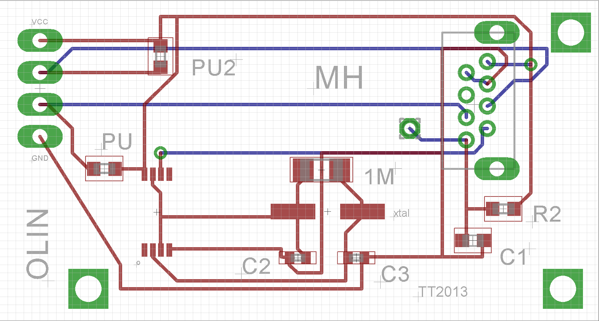
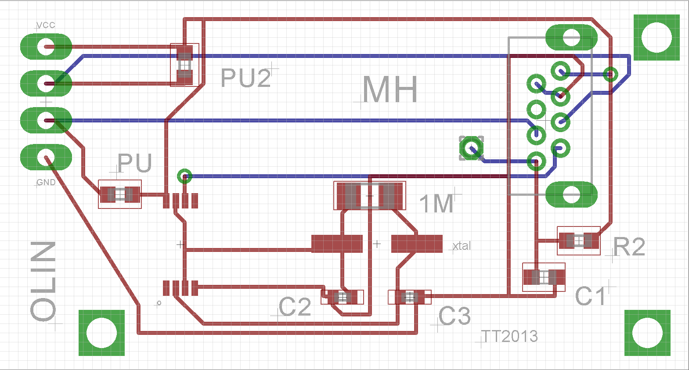

Our first approach to sensing onboard the tankbot was to use a Wiimote camera in conjunction with a Sharp IR proximity sensor. The Wiimote camera, when combined with an IR filter, gives us the location of an IR beacon carried by the user. We designed a custom PCB which allowed us to reliably read data from the camera over I2C.
Since the Wiimote camera lacked distance sensing ability, we used a Sharp IR proximity sensor for basic obstacle avoidance.
The benefit of this approach was that both sensors could be run off the PIC24, and neither required more power than the PIC could output. Both sensors were also very small which allowed for more carrying capacity. However, this approach was limited because the Wiimote did not have depth sensing. This made it impossible for the robot to follow a user within a consistent threshold.
For our second iteration, we opted for a more robust sensing system. We used a Microsoft Kinect, which eliminated the need for the user to hold an IR beacon. The switch to the Kinect also added depth sensing, which allowed for better following behavior. It could also be used for obstacle avoidance, which eliminated the need for the added IR sensor.
Although this new approach worked better than the Wiimote plan, there were several tradeoffs from adding a Kinect. The Kinect required using a laptop PC instead of a microcontroller, which took up space and limited the battery life of the robot. The Kinect also required a 12V supply, which we hoped to supply with the main 12V battery. However, the main battery voltage was too inconsistent to run the Kinect, so we needed to add a separate battery for the Kinect.
 
